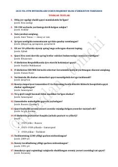

OTOʻzbekiston tarixidan OTM imtihonlari uchun majburiy testlar toʻplami.
Ushbu qoʻllanma Oliy taʼlim muassasalariga kirish imtihonlaridagi majburiy blok uchun Oʻzbekiston tarixidan tushgan test savollari va ularning javoblarini oʻz ichiga oladi. Material abituriyentlarga tarix fanidan bilimlarini sinash va imtihonlarga tayyorgarlik koʻrishda amaliy yordam beradi.